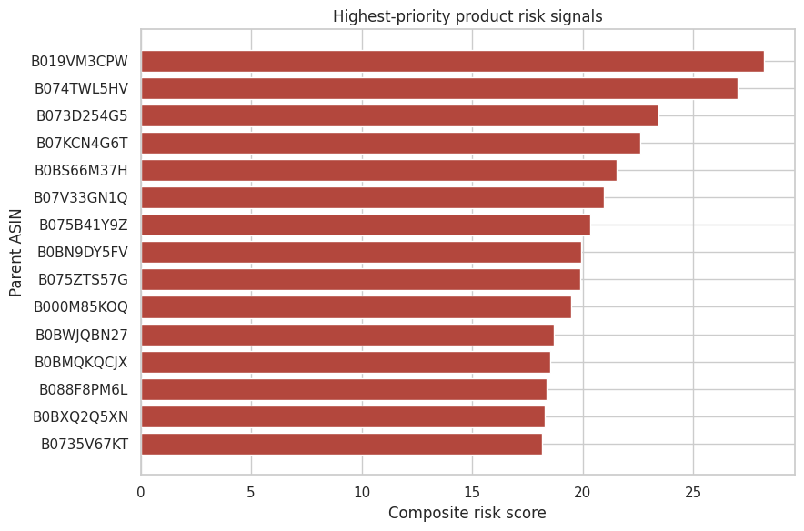
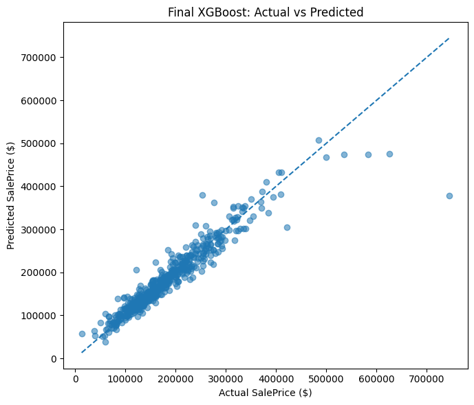
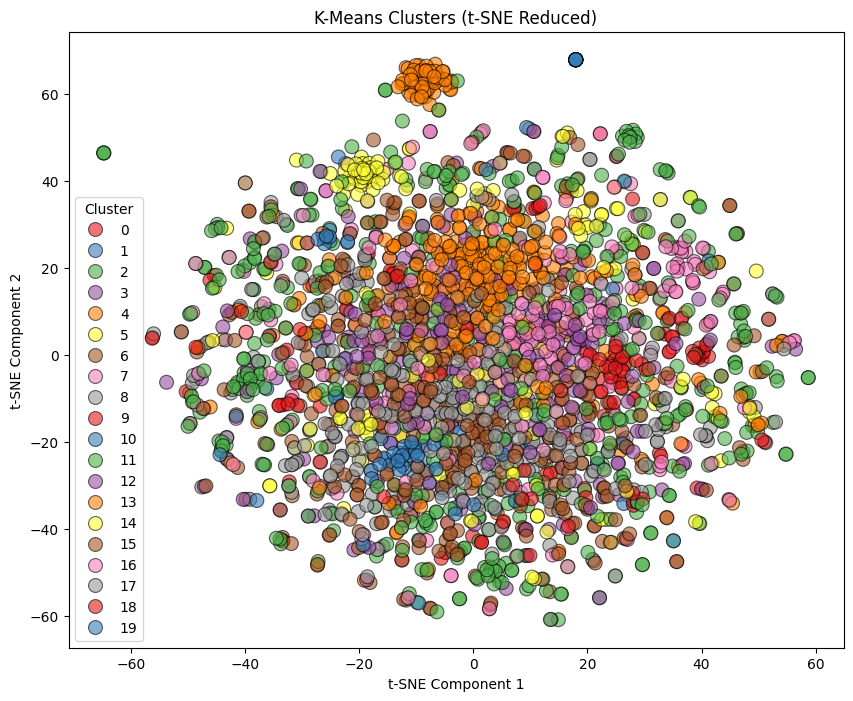

Big Data Engineering
Amazon Reviews Analytics


Analysed 7.23 million reviews with PySpark; Part 2 ranked 17,765 sufficiently reviewed products by customer-experience risk and validated RDD/DataFrame aggregation.
Read case study →Big Data Science · Machine Learning · Applied Analytics
Big Data Science master’s student with a BSc Honours in Computer Science and a foundation in Mathematical Sciences. I build applied machine-learning, NLP and large-scale analytics projects, with interests in risk modelling, predictive analytics and practical AI systems.
About
I grew up in Gandlanani Khani, Giyani, with limited access to computers and the internet. That experience made me a resourceful learner and taught me to see constraints as invitations to think differently.
Today, I combine mathematical thinking, computer science, and an emerging data-science toolkit to investigate difficult problems and build useful, understandable solutions. I am especially interested in machine learning, natural language processing, and technology that serves underrepresented communities.
Selected projects
A selection of research, data, mapping, and algorithmic projects. Each one starts with a practical question and turns it into something people can use.
Big Data Engineering

Analysed 7.23 million reviews with PySpark; Part 2 ranked 17,765 sufficiently reviewed products by customer-experience risk and validated RDD/DataFrame aggregation.
Read case study →Predictive Modelling


Compared regression pipelines on Ames Housing. Engineered-feature XGBoost achieved test RMSE $25,354.31 and R² 0.8999 on 586 held-out properties.
Read case study →Computer Vision · Model Compression


Reduced EfficientNet-B0 storage by 69.6% with INT8 quantisation, retaining 98.350% mean test accuracy across three seeds on PlantVillage. Compared pruning, quantisation and knowledge distillation.
Read case study →Machine Translation Research · English-Xitsonga
Investigated five augmentation techniques for English-Xitsonga using the Vuk’uzenzele aligned corpus. Compared BLEU and METEOR, semantic-similarity filtering (0.84), and translation-consistency classifiers; DistilBERT achieved 86.26% reported classification accuracy, not translation accuracy.
Read case study →Data Mining · English-Xitsonga


Explored 3,748 aligned English-Xitsonga sentence pairs using text preprocessing, TF-IDF, K-means, PCA and t-SNE. Evaluated augmentation similarity using a 0.83 pseudo-labelling threshold and compared exploratory classifiers.
Read case study →Artificial Intelligence · Neural Networks


Compared RProp, Adam, and a hybrid optimiser across network and training configurations, achieving 80.29% accuracy on the held-out test set.
Read case study →Explore hands-on applications spanning mapping, algorithms and mathematics.
Geospatial · Delivery pricing
A route-based delivery fee calculator using mapped journeys and transparent kilometre pricing.
Calculate delivery fareAlgorithms · Visualisation
An interactive way to explore prime numbers with the Sieve of Eratosthenes.
Launch projectConstraint solving · Algorithms
Solve Sudoku puzzles in the browser using a backtracking algorithm.
Launch projectInteractive mathematics
Find areas of geometric shapes through a simple interactive calculator.
Open calculatorAPI integration
Discover interesting mathematical facts with a lightweight API-powered app.
Explore math factsResearch & academic work
Questions, experiments and evidence. Explore completed studies and a research proposal—each presented for what it is, with its own methodology and source material.
FEATURED STUDY RESEARCH REPORT
Investigated how text augmentation can enrich scarce English-Xitsonga language data, comparing five techniques for preserving meaning and assessing translation consistency.

English-Xitsonga text mining with TF-IDF, K-means, PCA, t-SNE, semantic similarity and pseudo-label classification.
Explore data mining researchA proposed comparison of random and quality-aware selection for English-Xitsonga back-translation under equal data budgets.
Explore the research proposalAlso explored: neural-network theory, software architecture and responsible information systems.
Open academic archiveTechnical competencies
Big Data Science · Machine learning and model evaluation · Natural language processing · Predictive modelling · Data mining · Statistics · Mathematical optimisation · Data structures and algorithms
Python · SQL · R · Java · C++ · JavaScript · HTML · CSS · Software architecture and design patterns · Distributed processing with PySpark · Software development
Exploratory data analysis · Pandas · Advanced Excel · Power BI · Tableau · Data visualisation · Research methods and academic writing · Presentation and analytical communication
Compliance assessment · Risk-focused analysis · Debt portfolio analysis · Negotiation tactics · Client engagement · Stakeholder communication
Education
My studies connect mathematical reasoning, computer science, research, and modern data-science practice.
University of Pretoria
Advanced coursework in big data science, machine and statistical learning, data platforms, mathematical optimisation, data management, information ethics, and research methods, culminating in an applied big-data project.
University of Pretoria
Completed 120 credits of advanced computer-science study, including an independent supervised research project and technical report, supported by coursework spanning software engineering, architecture, artificial intelligence, data mining, and advanced computing topics.
University of Johannesburg
Built a rigorous foundation across mathematics, statistics, applied mathematical reasoning, and computer science, with progressive work in programming, algorithms, quantitative modelling, and analytical problem-solving.
Certificates
Each credential opens on its official verification page, so its authenticity can be checked directly with the issuing institution.
Coursera
Credential: N6B3CZP5T4YT
View verified credentialCoursera
Credential: YSC4DFRBH7ZF
View verified credentialUniversity of Johannesburg
Document ID: 01769213-01-A4YD
Open credential portalUniversity of Michigan · Coursera
Credential: ULZ9H5T7
View verified credentialContact
I am open to data-science opportunities, research collaborations, and meaningful software projects.
Start a conversation